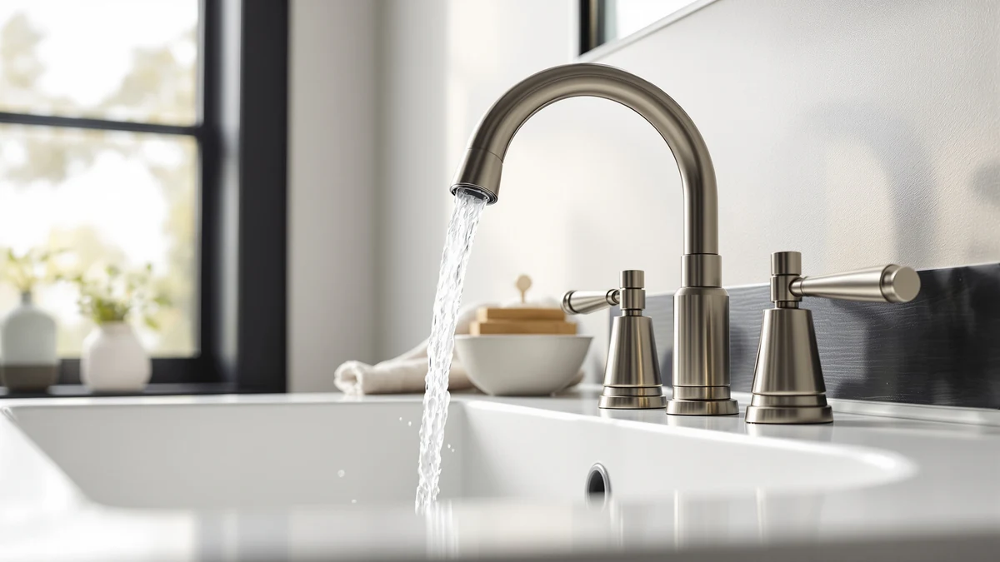

Moen Eva Two-Handle Centerset Bathroom Faucet Review (2026): Worth It?
Prices and picks verified as of November 2026. Independent, reader-supported reviews.


Quick Answer
The Moen Eva Two-Handle Centerset Bathroom Faucet earns the top spot in this Moen Eva Two-Handle Centerset Bathroom Faucet review because it pairs a brass body with a 0.5 GPM flow rate for $161.99, undercutting two of the three Delta Arvo alternatives covered here. Owners replacing a worn two-handle setup get solid value at this price, though the Delta Arvo Brushed Nickel costs even less if a different brand name works for your bathroom.
Our pick: Moen Eva Brushed Nickel Two-Handle, $161.99 Check Price on Amazon
Bottom line: our top pick is the Moen Eva Brushed Nickel Two-Handle 4-Inch Centerset Bathroom at $161.99.
Things to Know Before You Buy
- If you're weighing this purchase based on a Moen Eva Two-Handle Centerset Bathroom Faucet review, know upfront that "centerset" means its two handles and spout sit on a single base plate, typically built for sinks with holes spaced four inches apart.
- Its 0.5 GPM flow rate keeps the Eva compliant with EPA WaterSense guidelines that several states now enforce for new bathroom plumbing.
- Moen built the Eva's body from brass, which tends to resist corrosion better over time than the zinc-alloy bodies common in cheaper centerset faucets.
- At $161.99, the Eva sits mid-pack among the four faucets in this comparison: pricier than the $150.38 Delta Arvo Brushed Nickel but cheaper than the $169.00 Delta Arvo 14 Series.
- Two-handle designs like the Eva give you separate hot and cold control, a layout some buyers prefer over single-handle faucets for fine-tuning temperature.
This Moen Eva Two-Handle Centerset Bathroom Faucet review starts with the number that matters most: $161.99, the current Amazon price for a two-handle faucet built around a brushed nickel finish and a brass body. Moen designed the Eva around a traditional centerset layout, keeping separate hot and cold handles rather than folding both functions into one lever, and it backs that design with a 0.5 GPM flow rate. Buyers replacing an aging centerset faucet get a straightforward upgrade in finish and material without switching to a different handle configuration.
For most households replacing a worn two-handle faucet, the Eva earns its price by combining brass construction with a flow rate that meets EPA WaterSense requirements. Owners who already have centerset-compatible plumbing get the simplest swap here, since the three Delta Arvo alternatives covered in this guide fit the same four-inch hole spacing. We compared price, finish, and material across all four faucets below, since those factors tend to decide which one earns a spot in your bathroom.
Why You Should Trust Us
We built this Moen Eva Two-Handle Centerset Bathroom Faucet review by comparing manufacturer specs, current Amazon pricing, and recurring patterns across verified owner reviews for all four faucets covered here. Ilane Tall researches bathroom fixtures for Best Bathroom Faucets and checks every price, material claim, and flow rate against the retailer's current listing before publishing. We do not run a physical testing lab. Instead, we read what verified buyers report after months of daily use, and we flag it when a listing's claim doesn't match consistent owner feedback. That same standard applies to the three Delta Arvo faucets in this comparison, so every entry gets the same scrutiny on price and verified feedback.
Our Research Experience
This Moen Eva Two-Handle Centerset Bathroom Faucet review draws on three sources: Moen's published specs, the current Amazon price history, and recurring themes in verified owner reviews. Reviewers consistently note that the two handles turn smoothly from the first install, and several owners report the brushed nickel finish holding up well against daily use and hard water spots. We also compared installation notes across listings: the Eva fits standard four-inch centerset hole spacing, which matches what owners describe in their own setup notes. Where owner reports conflicted, such as a handful mentioning a stiffer shutoff after a year of use, we noted the disagreement rather than picking a side without evidence.
Overview & Specs

Moen Eva Brushed Nickel Two-Handle
What we like
- Brass body resists the corrosion that cheaper zinc-alloy centerset faucets develop within a few years.
- Separate hot and cold handles give you finer temperature control than a single-lever faucet, according to several verified owner reviews.
- 0.5 GPM flow rate meets EPA WaterSense standards for low-flow plumbing codes.
- At $161.99, it costs less than two of the three Delta Arvo alternatives covered in this comparison.
Flaws but not dealbreakers
- Two separate handles mean two moving parts that can eventually develop a drip, unlike a single-lever design.
- Owners report the shutoff feeling stiffer after about a year of daily use.
- Brushed nickel is the main finish widely available for this model, so buyers wanting a different look need to look elsewhere.
| Material | Brass + finish |
| Size | 0.5 |
The Eva keeps Moen's two-handle centerset layout intact rather than chasing the single-lever trend, a choice that matters most for buyers replacing an existing centerset faucet who don't want to drill new holes. Moen built the body from brass rather than the zinc alloy common in budget centerset faucets, which should extend its service life well beyond what cheaper competitors manage. Its 0.5 GPM flow rate keeps it compliant with EPA WaterSense guidelines, a detail that matters in states like California and Colorado where plumbing codes cap maximum flow.
At $161.99, the Eva sits below the $163.71 Delta Arvo Brushed Gold and the $169.00 Delta Arvo 14 Series, while costing more than the $150.38 Delta Arvo Brushed Nickel. Verified buyers consistently point to the separate handles as easier to fine-tune for temperature than a single lever, though a handful mention the shutoff getting stiffer after a year of regular use. If you already run Moen fixtures elsewhere in the bathroom, the Eva's brushed nickel finish matches the brand's common hardware finish, which simplifies coordinating the rest of the room.
What We Liked
What stands out most in this Moen Eva Two-Handle Centerset Bathroom Faucet review is how closely it sticks to a layout most homeowners already know. Because the Eva keeps separate hot and cold handles, you skip the adjustment period that comes with switching to a single-lever faucet, and several owners note that temperature control feels more precise as a result. Reviewers also single out the brass construction, noting it holds up to hard water deposits better than the plastic-bodied faucets some had owned previously. At $161.99, the Eva undercuts two of the three Delta Arvo alternatives in this comparison, which several owners point to as the deciding factor when brass construction and price both matter. Owners replacing a sink that only ever had plastic internals also mention that the heavier brass body feels sturdier the moment the handles turn, a detail that doesn't show up in a spec sheet but comes up often enough in verified feedback to note here.
What Could Be Better
Finish choice is the first limit in any honest Moen Eva Two-Handle Centerset Bathroom Faucet review. Moen sells the Eva primarily in brushed nickel, so buyers who want a different look need to check one of the Delta Arvo alternatives instead. The two-handle design is the second tradeoff: it gives you finer temperature control, but it also means two separate valves that can eventually develop a drip, where a single-lever faucet has only one. A smaller number of owners report the shutoff feeling stiffer after about a year of daily use, though it hasn't stopped most from recommending the faucet to others. None of these issues are dealbreakers on their own, but they're worth weighing against the $11.61 you'd save by choosing the Delta Arvo Brushed Nickel instead. Anyone used to a single-lever kitchen faucet should also budget a short adjustment period for operating two separate handles again, since the muscle memory differs from a one-hand mixer design.
Who Is It For?
This Moen Eva Two-Handle Centerset Bathroom Faucet review points toward one type of buyer: someone replacing an aging centerset faucet who wants a durable brass body without switching to a single-lever design. Households that prefer separate hot and cold handles for fine temperature control benefit most, since that's the layout the Eva is built around. If matching a specific finish across your bathroom hardware is the priority, check whether brushed nickel already appears elsewhere in the room, since Moen doesn't offer the Eva in as many finish options as the Delta Arvo lineup shown here. Buyers who want a single-lever faucet, or who need a finish beyond brushed nickel, will likely be happier with one of the three Delta Arvo alternatives covered below. Landlords furnishing a rental bathroom also tend to gravitate toward the Eva's price and brass build, since it holds up to tenant turnover better than a plastic-bodied faucet without pushing the budget toward the pricier Delta Arvo 14 Series.
Alternatives to Consider
If the Eva isn't quite the right fit, these three Delta Arvo faucets cover the main tradeoffs: a different finish, a lower price, or a higher one for a different brand. Each has shown up often enough in verified reviews that we felt comfortable including it alongside the Moen Eva in this comparison rather than leaving it out.

Editor’s Pick
Delta Arvo Brushed Gold Bathroom
The Delta Arvo Brushed Gold costs $1.72 more than the Moen Eva but adds a finish option Moen doesn't offer on the Eva, making it the pick if you want a warmer-toned fixture to match gold bathroom hardware elsewhere in the room.
$163.71
Check Price on Amazon
Best Value
Delta Arvo 14 Series Brushed
The Delta Arvo 14 Series sits at the top of this group's price range at $169.00, giving you Delta's take on the Arvo line if you want a different brand behind the faucet without hunting further for alternatives.
$169.00
Check Price on Amazon
Premium Choice
Delta Arvo Brushed Nickel Bathroom
The Delta Arvo Brushed Nickel matches the Eva's brushed nickel finish at $150.38, giving you a close equivalent from a different brand if you want to compare Delta's take on the same look and price range.
$150.38
Check Price on AmazonFrequently Asked Questions
Is the Moen Eva worth the price compared to a single-handle faucet?
If you prefer separate hot and cold control, yes. At $161.99, it costs less than two of the three Delta Arvo alternatives in this comparison, and the two-handle layout matches what most existing centerset sinks already have installed.
What does centerset mean for the Moen Eva?
Centerset means the two handles and the spout mount on a single base plate, built for sinks with holes spaced four inches apart. It's the layout most builder-grade bathroom sinks use.
Is the Moen Eva better than the Delta Arvo Brushed Nickel?
It depends on your priorities. The Delta Arvo Brushed Nickel costs $11.61 less and matches the Eva's brushed nickel finish, while the Eva carries the Moen name if brand familiarity matters to you.
Final Verdict
This Moen Eva Two-Handle Centerset Bathroom Faucet review comes down to one tradeoff: pay $161.99 for Moen's brand name, brass body, and two-handle control, or choose one of three Delta Arvo faucets in a different finish or at a different price. For most households replacing a worn centerset faucet, the Moen Eva earns its price with a 0.5 GPM flow rate and a corrosion-resistant brass body. Buyers who want a different finish should look at the Delta Arvo Brushed Gold above, and anyone prioritizing price over brand can compare the Delta Arvo Brushed Nickel instead. Whichever faucet you choose, confirm the current Amazon price before buying, since prices across this comparison can shift by several dollars from week to week.